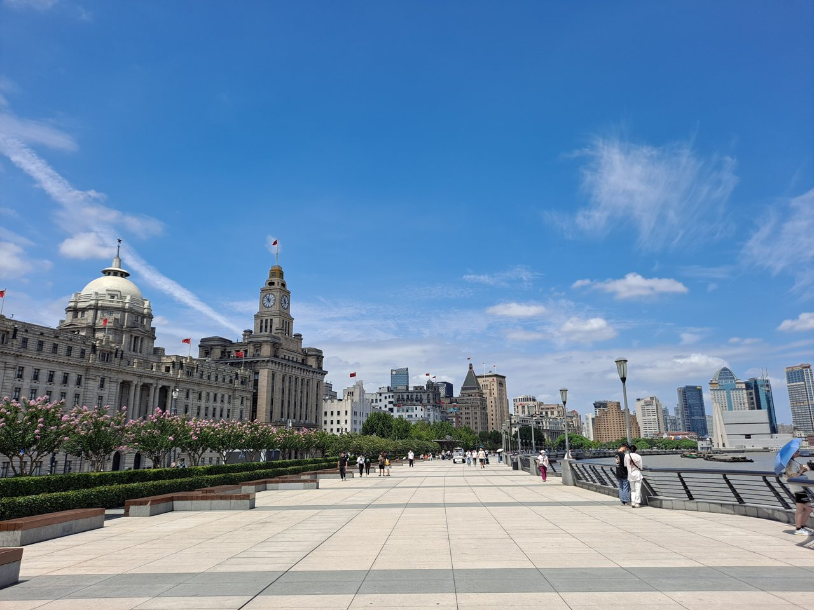

Đi qua miền
Giang Nam.
Hai ngày citywalk, săn ảnh ở Thượng Hải; tiếp đó là Tô Châu, đêm Ô Trấn, Hồ Thanh Sơn và Tây Hồ Hàng Châu.

Tuyến đường được tối ưu
Một vòng qua Giang Nam, hạn chế đi lại giữa các thành phố.
4 thành phố, 7 ngày nhiều sắc thái
Thông tin cần xác nhận
Hành trình 7 ngày
Chạm vào một ngày để xem giờ giấc, phương tiện và chi tiết.
Khách sạn & phương tiện đã gợi ý
Chọn hạng lưu trú, phương án xe rồi xem ngân sách tính lại theo đoàn.
Nguồn ảnh chụp thật & giấy phép sử dụng (Wikimedia Commons / Trip.com / Ctrip)
Ảnh chỉ được liên kết từ trang nguồn. Hai ảnh trên Trip.com/Ctrip thuộc chủ sở hữu tương ứng; việc tái sử dụng ngoài cẩm nang cá nhân cần xin phép. Ảnh Commons giữ nguyên ghi công và thông tin giấy phép.
Từng ngày, từng khung giờ.
Tuyến Thượng Hải tham khảo từ lịch Word, ưu tiên chụp ảnh và dạo phố. Giờ là dự kiến, đặc biệt ngày đến còn phụ thuộc giờ bay.
✧ Xem địa điểm thay thế ↓Ảnh thực tế các điểm đến
Ảnh chụp tại đúng địa điểm; nhấn ảnh để mở trang nguồn và thông tin tác giả.
Góc chụp ảnh đáng ưu tiên
Được lựa chọn từ lịch trình Word; thứ tự theo tuyến di chuyển, thời điểm ánh sáng thay đổi theo mùa.
Một tối Cung Yến cùng cả đoàn
Đã đặt vào lịch ngày 2 tại Thượng Hải theo mặc định. Có thể đổi nơi tổ chức; ứng dụng sẽ thay thế buổi tối ở thành phố đó, không thêm tiệc trùng ngày.
Timeline chi tiết
Giờ minh họa • giờ địa phươngĐịa điểm tham khảo khác
Các gợi ý chưa nằm trong lịch trình. Chọn theo sở thích và thời gian còn lại của đoàn.
Ngủ ngon ở từng thành phố.
9 khách sạn có thật, chọn trước 1 khách sạn mỗi chặng. Giá CNY/phòng/đêm là khoảng dự trù để lập ngân sách, không phải giá phòng đang mở bán cho ngày bạn đi.
2 Thượng Hải · 1 Tô Châu · 1 Ô Trấn · 2 Hàng Châu
Giả định phòng 2 khách (Twin/Double). Khách sạn chưa được đặt; số phòng và số giường phải được bên lưu trú xác nhận.
Đi cùng nhau, đi bằng xe riêng.
Đi đường bộ toàn chuyến là lựa chọn chính khi đoàn có nhiều vali. Có thể chuyển về phương án tàu + xe nếu muốn so sánh; mọi giá 7 ngày là dự toán, cần nhà xe báo giá trọn gói.
Chọn loại xe
Giá 7 ngày theo xe (CNY) ngoại suy 7/6 từ dự toán 6 ngày để so sánh, chưa phải báo giá niêm yết.
4 chặng đường bộ chính
Thời gian tính từ điểm đón tới điểm trả, có thể tăng do kẹt xe và quy định đỗ xe.
Đơn vị tham khảo & yêu cầu báo giá
Bạn có thể gửi yêu cầu thuê xe 7 ngày cho ít nhất 2 đơn vị để so sánh.
Đặt trước theo tuyến cố định
Klook có dịch vụ xe riêng cho các tuyến quanh Thượng Hải, bao gồm các điểm Tô Châu, Ô Trấn và Hàng Châu; tùy loại xe và phạm vi tuyến.
Xem dịch vụ Klook ↗Báo giá theo đoàn & số vali
Tham khảo bảng giá xe theo chặng/loại xe của CHN Trips; tuyến 7 ngày cần hỏi trực tiếp tổng phí.
Xem giá tham khảo ↗Mẫu yêu cầu báo giá bằng tiếng Anh
Nhấn sao chép rồi gửi cho nhà xe. Dùng để hỏi rõ phụ phí ngoài mức niêm yết.
Đi đâu, đi bằng gì?
Sơ đồ phác thảo hành trình và liên kết tìm kiếm địa điểm bằng 高德地图 (Amap), tiện sử dụng tại Trung Quốc.
Bản đồ tuyến tham khảo
Sơ đồ minh họa, không phải bản đồ định vị theo tỉ lệ.
Di chuyển chính
Thời gian chỉ tính chặng chính, chưa gồm di chuyển đến ga, kiểm tra an ninh, chờ tàu, tắc đường và đổi sang sân bay. Tra lại theo ngày cụ thể.
Liên kết nhanh
Chi tiêu có kế hoạch.
Dự toán minh họa cho 7 ngày 6 đêm, không phải giá đặt phòng và thuê xe thời gian thực. Điều chỉnh số khách, vali, loại xe và khách sạn; tổng tiền phòng và xe sẽ cập nhật theo lựa chọn của đoàn.
Gồm các khách sạn đã chọn, xe/di chuyển trong Trung Quốc, ăn uống, vé tham quan và dự phòng. Không phải báo giá trực tiếp.
Đọc dự toán như thế nào?
Thấp: khách sạn và ăn uống tầm trung tiết kiệm, ít chi phí phát sinh.
Cao: phòng đẹp hơn, di chuyển ô tô giữa các điểm, trải nghiệm bổ sung.
Giá thực tế có thể biến động mạnh theo ngày đi, cuối tuần, lễ và loại phòng.
Sẵn sàng lên đường.
Tích vào các mục đã hoàn thành. Trạng thái và ghi chú chỉ lưu trong trình duyệt trên thiết bị này, không đồng bộ giữa các máy.
Tiến độ chuẩn bị
Bắt đầu với giấy tờ và việc đặt vé.
Chưa nhập ngày đi nên chưa có dự báo hợp lệ. Mini app không kết nối API thời tiết và sẽ không hiển thị nhiệt độ tự tạo.
Sau khi xác định ngày, hãy kiểm tra dự báo thực tế trước chuyến đi 3–5 ngày và cập nhật hành lý.
Tra cứu thời tiết Trung Quốc ↗Thông tin đã tra cứu ngày 16/10/2026. Chính sách vẫn có thể thay đổi trước khi bạn đi.